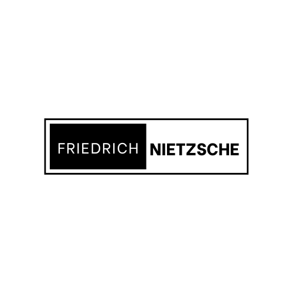

|  | Home| Quem somos| Fale conosco |
Assim Falava ZaratustraAssim falava Zaratustra é uma das principais obras de Nietzsche. Influente e controverso, o romance filosófico mostra os principais pensamentos do autor pela ótica da lenda de um poeta persa chamado Zaratustra. Ele lhes ensina o caminho da superação do eu, mostrando-lhe o caminho para se tornar o que ele chama de Super-Homem. |
|
|---|---|